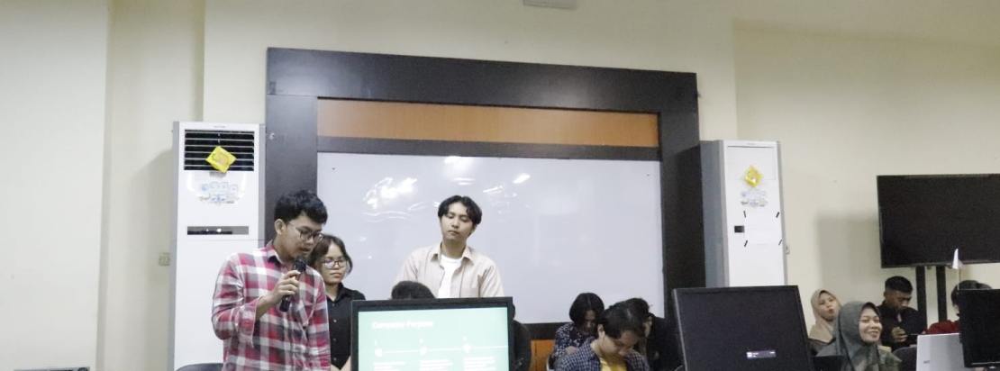
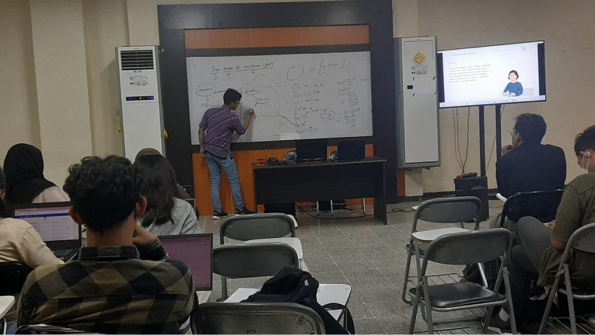

Skills Programming
Framework &
Tools
I've been doing my last assignment in programming using HTML, CSS, JavaScript, PHP, Python, and SQL.
Using tools like GitHub and VSCode, as well as frameworks like Bootstrap, Tailwind, and Laravel, I
develop responsive and interactive web applications. The development process involves interface
design, business logic, data processing, and database management. I also learned to integrate
various programming languages and take advantage of the features provided by tools and frameworks to
create quality applications.

I am a 4th semester student from the Information Systems Study Program, Faculty of Computer Science,
Jember University. My interest in technology starts from programming and computer network. I enjoy
the challenge of writing code, developing applications, and solving problems using programming
languages. Apart from that, I also have a strong interest in studying and understanding network
infrastructure, topology, protocols, and devices involved in connecting computer systems. I like to
explore and experiment with the latest technologies in the world of programming and computer
networks to improve my understanding and skills.
During my college years, I actively participated in various organizational activities at the Faculty
of Computer Science, University of Jember (UNEG). One of the organizations I joined was the Network
Laboratory at the Faculty of Computer Science, UNEJ, where I served as a laboratory assistant.
Additionally, I was also actively involved in event committees, such as being part of the organizing
committee for the New Student Orientation Program for the Information Systems department.
